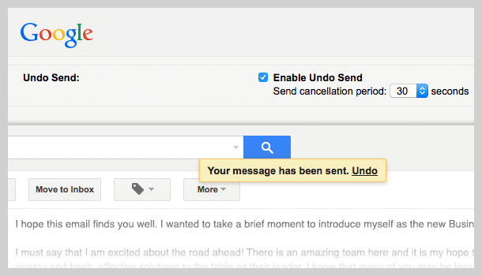
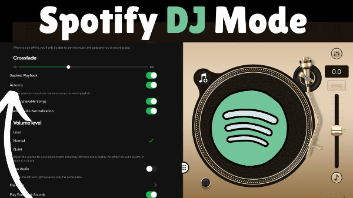

"아니, 벌써 3시간이나 지났어?"
넷플릭스를 보다가, 게임을 하다가 시간 가는 줄 모르고 깜짝 놀란 경험이 있을 겁니다. 바로 이 상태를 심리학자 미하이 칙센트미하이는 'Flow State(몰입 상태)'라고 명명했습니다.
1975년, 칙센트미하이는 예술가들이 작품에 몰두할 때 먹는 것도, 자는 것도 잊은 채 작업에만 집중하는 현상을 연구했습니다. 그는 이런 상태에서 사람들이 최고의 행복감과 성취감을 느낀다는 것을 발견했습니다. 흥미로운 건, 이 개념이 40년이 지난 지금 실리콘밸리의 가장 핫한 UX 전략이 되었다는 점입니다.
구글의 Gmail 팀은 'Undo Send' 기능을 만들 때 Flow State 원칙을 적용했습니다. 이메일을 보낸 직후 5초간 취소할 수 있는 이 기능은 사용자가 이메일 작성 흐름을 깨지 않으면서도 실수를 바로잡을 수 있게 해 작성 시간을 23% 단축시켰습니다.

스포티파이의 'DJ' 기능은 AI가 사용자 취향을 분석해 끊김 없이 음악을 이어가며, 중간중간 DJ 멘트까지 삽입합니다. 사용자는 플레이리스트 고민 없이 음악에만 집중할 수 있어 평균 재생 시간이 31% 늘었습니다. 듀오링고는 언어 학습을 게임처럼 디자인해 연속 학습 일수, 경험치, 리그 시스템으로 일일 활성 사용자 1,500만 명을 달성했습니다.

Flow State를 유도하려면 세 가지 요소가 필요합니다. 명확한 목표와 즉각적인 피드백(인스타그램의 '좋아요' 애니메이션), 도전과 실력의 균형(넷플릭스의 5초 자동재생 대기), 그리고 방해 요소 제거(노션의 집중 모드)입니다.
주의해야 할 함정도 있습니다. 과도한 게이미피케이션으로 산만해지거나, 맥락에 맞지 않는 디자인은 역효과를 낼 수 있습니다. 틱톡의 무한 스크롤처럼 중독적 요소와 건전한 몰입 사이의 미묘한 차이를 구분해야 하며, 사용자의 웰빙을 고려하지 않으면 장기적으로 신뢰를 잃을 수 있습니다.
Flow State Design은 사용자를 오래 붙잡아두는 기술이 아닌, 진정으로 가치 있는 일에 몰입할 수 있도록 돕는 철학입니다. "이 기능이 사용자의 몰입을 돕는가, 아니면 방해하는가?"라는 질문이 평범한 제품과 중독적인 제품을 가릅니다.
UX의 언어들이 책으로 나왔어요.